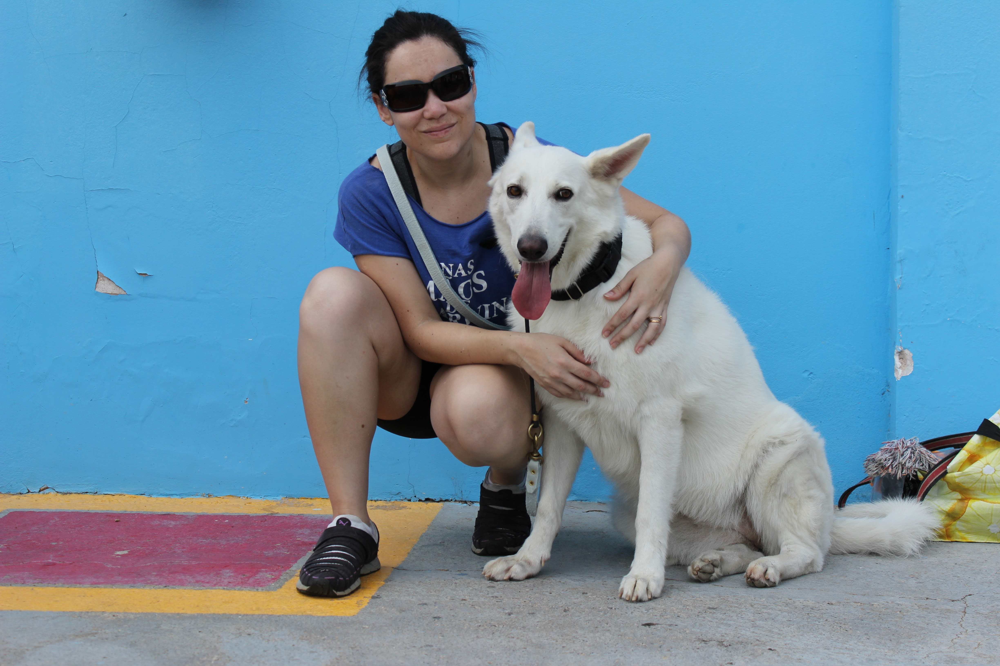
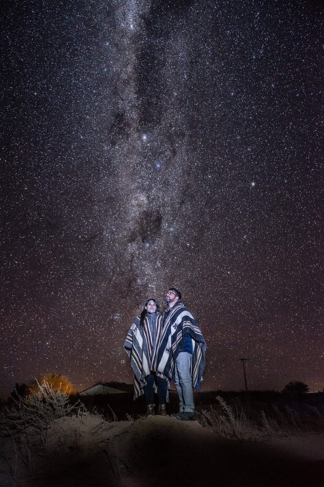

Starting to train my dogs was an accomplishment for me. I delved into the subject and qualified myself to be able to perform as a trainer, the discipline and motivation I discovered when I managed to teach my dogs commands were sensational. I still keep with me all the experiences I learned with me and I am convinced that as soon as I have another dog I will continue with this hobby. When my dogs were gone, I kept myself busy in my hobbies.Surely, what I like to do the most is defined in two hobbies: one is playing video games and the other is being in contact with nature. Playing video games gave me the opportunity to learn another language and interact with people from all over the world, and through it, I met my husband.


Drawing is a childhood passion, as is stargazing. I usually walk looking at the sky whenever it is starry or with the moon apparent. Whenever I can travel, I look for a destination that offers me contact with nature and has a clear sky for observation. My fascination with the stars led me to love sciences such as math and physics. As my friends would say, I am a unique person for liking these specific subjects.